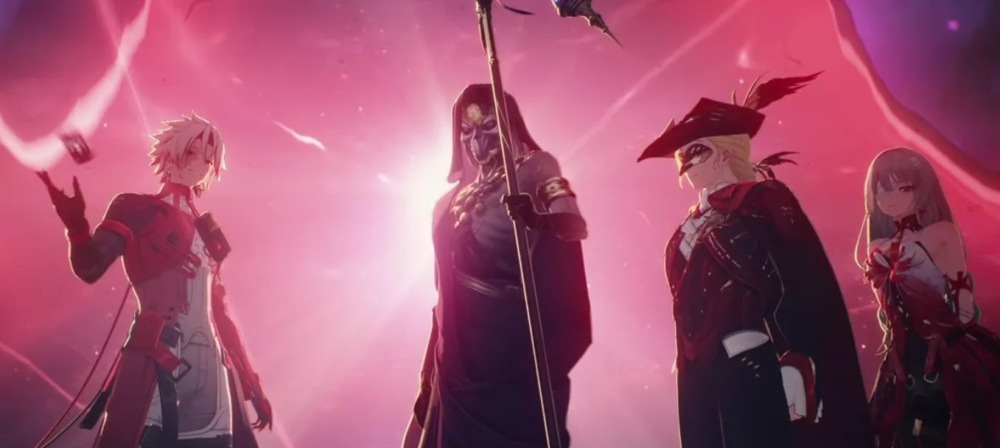
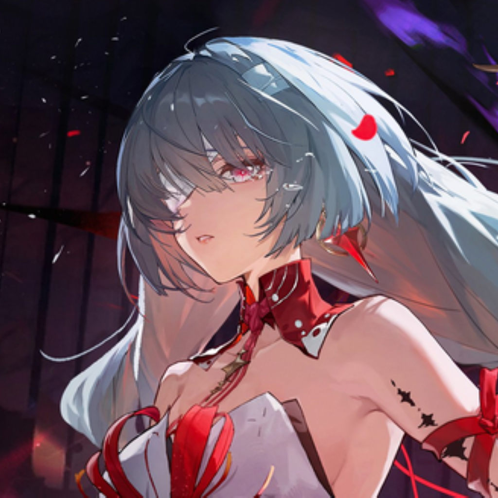
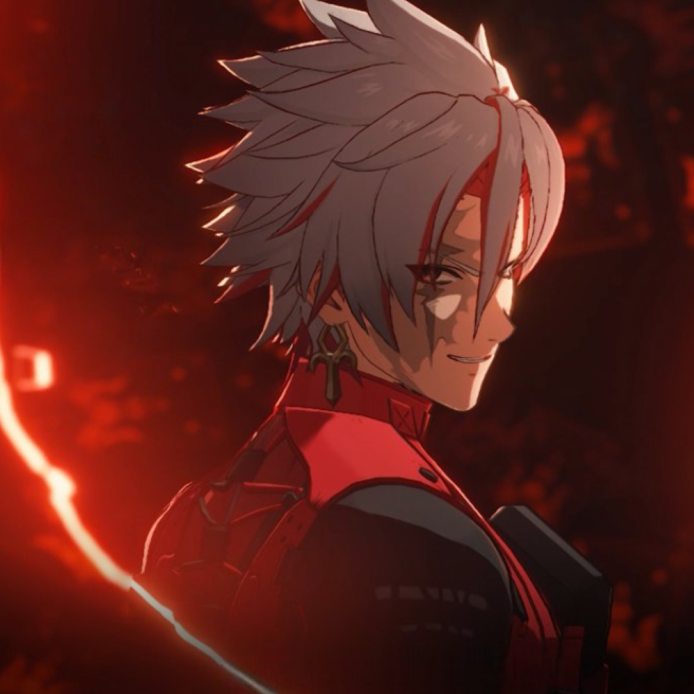

Fractsidus
The Fractsidus Organization
To attain the next level of human evolution, individuals must absorb Tacet Discords into themselves, engaging in a transformative struggle.

WHO WE ARE

Schwarzloch
Leader of the Fractsidus
The Immortal Leader of the Fractsidus and its founder. A being that has existed before the etheric sea was formed. Known as "The Thousand-Faced Survivor" Known to have the ability to recreate any frequency. She is the cunning, immortal leader of the Fractsidus, who has worked for centuries to further their efforts, recruit new Overseers, and realize his grand design of putting fate into humanity's own hands through mass destruction, by facilitating a new evolution through the creation of a new Lament.

Cristoforo
The Playwright
The enigmatic Lord Overseer of the Fractsidus, known across Solaris-3 as "The Playwright." Codenamed "Arachnos", he operates as the grand architect of chaos, weaving the tapestry of fate through the creation of intricate Sonoro Spheres. His resonance allows him to manifest reality as a scripted tragedy, using historical anchors to force individuals into predetermined roles. He is a master of dramaturgy who views the world as a stage for human evolution, often sacrificing entire civilizations to witness the "beauty" of a perfectly orchestrated Lament.

Phrolova
The Conductor
The cold and somber former Overseer of the Fractsidus, recognized by the Codename "Hecate". A master of frequency manipulation, she wields her baton to bridge the resonance between life and death, commanding a three-faced entity of decaying frequencies to silence her enemies. Once a musician seeking to resurrect a lost past, she served as the organization’s strategist, ensuring the world’s discordance reached a crescendo. She views the coming Lament not as simple destruction, but as a necessary requiem for a stagnant reality that failed to protect what she loved.

Scar
The Blacksheep
A volatile and charismatic Overseer who acts as the vanguard of the Fractsidus’s nihilistic vision. Codenamed "Blacksheep", he is driven by a primal resonance of fire and illusion, he seeks to strip away the social masks of humanity to reveal the raw, underlying "truth" hidden within their frequencies. He is a chaotic variable on the battlefield, believing that true evolution can only be sparked through the agony of total collapse. To him, the Lament is a cleansing flame that will burn away the lies of the current world order, leaving only the most resilient frequencies to survive.